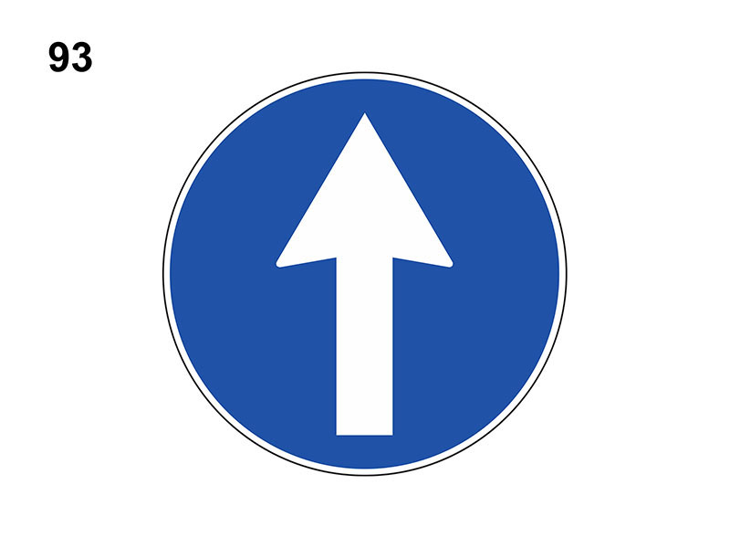

title

E' un segnale di divieto e vieta il transito a tutti i veicoli, quindi vieta la circolazione in entrambe i sensi. Vale 24 ore su 24 ma può avere validità limitata nel tempo, indicata in un pannello integrativo. E' posto su entrambi gli accessi della strada. Vale anche per i veicoli sprovvisti motore (es le biciclette) e per le auto elettriche, ma non per i pedoni. Non è vero che consente di entrare nella strada per la sosta o per effettuare operazioni di carico e scarico.